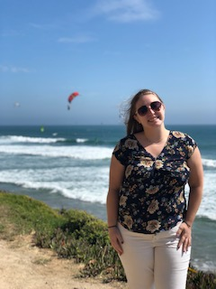

About Me
My name is Nicole Apsche. I am originally from Bucks County, but I have lived in Philadelphia for 8 years, and live in West Philadelphia. I moved to Philadelphia to attend Temple Univeristy, where I earned my Bachelor's Degree in Neuroscience in 2016. After graduating, I moved to Washington Square West in Center City until I finally landed in West Philadelphia. I love animals, food, running, being outside, and spending time with friends.
I am an Account Executive for KGTiger, a talent acquisition company. We are based out of Bala Cynwyd, and offer a variety of solutions to finding talent. I also bartend Sunday brunch at Copabanana in University City. I was excited to begin the Penn LPS Coding Boot Camp to learn something new. I am excited to see where this new path takes me! I am a hard worker and am eager to learn!